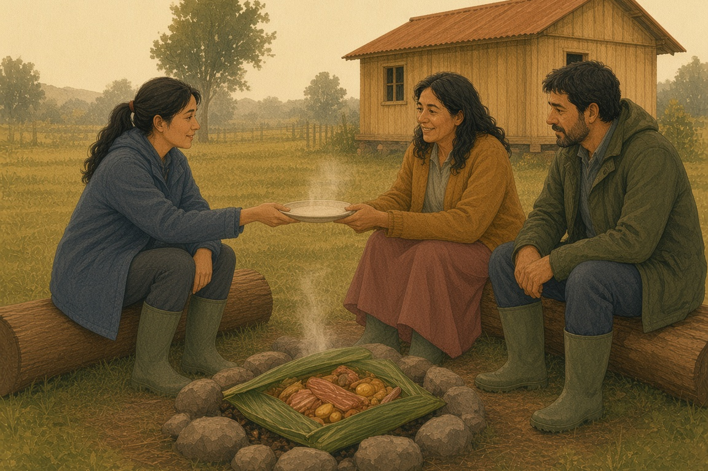

- B2
- La minga
Hoy se mueve la casa
En Chiloé, en el sur de Chile, una casa de madera no siempre se deja atrás: a veces avanza con ayuda de los vecinos.
Texto
Llegué a Chiloé en una barcaza, con la llovizna típica del sur de Chile. Me esperaba Sandro, un vecino de un pueblo cerca de Dalcahue, en la Isla Grande. Con la mochila todavía en la espalda, me dijo: «Hoy no vamos a recorrer iglesias. Hoy se mueve una casa». Yo sonreí, insegura, porque imaginé una mudanza con cajas. Él negó con la cabeza. «La casa entera. Es una minga».
En Chiloé, una minga es un trabajo que se hace entre todos, sin paga, con la idea clara de que otro día te toca a ti. La palabra tiene raíz en el quechua mink'a, que nombra esa ayuda recíproca. Hay mingas para cosechar, para levantar un techo o para abrir un camino. La más sorprendente, para quien llega de fuera, es la tiradura de casa: una vivienda de madera se coloca sobre vigas o troncos y avanza, lenta, tirada por una yunta de bueyes. Se hace cuando una familia necesita un terreno más seguro, más cerca de un camino o más lejos de la marea. No es un espectáculo de cada semana, ni una postal permanente; ocurre cuando hace falta, y hace falta gente.
Yo vi una casa de madera, del color de la miel mojada, deslizarse unos metros por un camino de tierra. Doña Teresa, la dueña, caminaba junto a la puerta, como si no quisiera dejar sola a su propia casa; Sandro iba a su lado, con la cuerda. Yo miraba desde el borde del camino. Otros vecinos colocaban troncos, gritaban avisos, apartaban una rama; más adelante, donde yo ya no los veía bien, también se tiraba de la casa. El avance fue irregular: a veces un metro, a veces una pausa larga. Pregunté si le pagaban a alguien. Sandro se rió, sin burla: «No. Otro día te toca a ti». Me explicó que su abuelo le hablaba de esas tiraduras como de algo más habitual. Hoy son menos frecuentes, pero el principio no cambió: una familia sola no mueve una casa.
Cuando la casa llegó, por fin, a su nuevo lugar, nadie se fue de inmediato. Doña Teresa y su familia habían preparado un curanto: carnes, papas y mariscos cocidos con piedras calientes, bajo hojas, en un hoyo en la tierra. Nos sentamos con el olor a humo y a mar, con las botas todavía mojadas. Ahí entendí que la minga no termina en el último metro. Termina alrededor del curanto. Pensé en las mudanzas que yo conocía en Estados Unidos: se contrata un camión, o se deja la casa y se busca otra. Aquí la casa se va con la familia, y los vecinos se van con la casa.

Es fácil convertir esta imagen en una curiosidad bonita: la casa que camina, los bueyes, la lluvia. Conviene que no nos quedemos solo en esa foto. La minga también es la espalda cansada, el día largo y una deuda de gratitud que no se escribe en un contrato. En un archipiélago, una persona sola no basta. Ojalá que sepamos mirar esta costumbre con respeto, no como un recuerdo pintoresco, sino como una manera de vivir juntos que todavía tiene sentido.